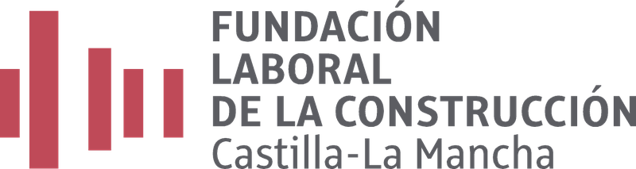

<!DOCTYPE html>
<html lang="es">
<head>
<meta charset="utf-8">
<meta name="viewport" content="width=device-width, initial-scale=1">
<title>Materiales de construcción</title>
<style>

:root { --page:#faf7f2; --card:#ffffff; --ink:#2b2620; --ink2:#6b6353; --line:#e8e0d2; --accent:#6b4f1d; --warn-bg:#fdf3e3; --warn-line:#d99a2b; --note-bg:#eef5ee; --note-line:#7ba05b; }
* { box-sizing: border-box; }
html, body { margin: 0; padding: 0; }
body { background: var(--page); color: var(--ink); font-family: 'Segoe UI', system-ui, -apple-system, Arial, sans-serif; font-size: 16px; line-height: 1.55; }
.wrap { max-width: 640px; margin: 0 auto; padding: 20px 16px 48px; }
.cab { display: flex; align-items: center; gap: 14px; margin-bottom: 6px; }
.cab { flex-direction: column; align-items: flex-start; gap: 10px; }
.cab img { width: 105px; height: auto; max-width: 40%; }
.home .cab img { width: 250px; max-width: 80%; }
.cab h1 { font-size: 24px; margin: 0; line-height: 1.2; }
.fact { color: var(--ink2); font-size: 13px; margin-top: 2px; }
.intro { color: var(--ink2); margin: 10px 0 18px; }
.callout { border-radius: 12px; padding: 12px 16px; margin: 14px 0; font-size: 14.5px; }
.callout b { display: block; margin-bottom: 2px; }
.note { background: var(--note-bg); border: 2px solid var(--note-line); }
.warn { background: var(--warn-bg); border: 2px solid var(--warn-line); }
.seccion { margin-top: 22px; }
.seccion > h2 { font-size: 13px; text-transform: uppercase; letter-spacing: .06em; color: var(--ink2); margin: 0 0 10px; font-weight: 600; }
.datos { background: var(--card); border: 1px solid var(--line); border-radius: 12px; padding: 12px 16px; }
.datos div { display: flex; gap: 10px; padding: 4px 0; }
.datos b { flex: none; min-width: 110px; color: var(--accent); font-size: 14px; }
input[type=search] { width: 100%; padding: 12px 14px; font-size: 16px; border: 1px solid var(--line); border-radius: 12px; background: var(--card); color: var(--ink); }
.niveles { display: flex; gap: 8px; margin-top: 10px; }
.niveles button { flex: 1; padding: 10px; border-radius: 10px; border: 1px solid var(--line); background: var(--card); color: var(--ink2); font-size: 14.5px; cursor: pointer; }
.niveles button.sel { background: var(--accent); border-color: var(--accent); color: #fff; font-weight: 600; }
.ficha-card { display: block; text-decoration: none; color: var(--ink); background: var(--card); border: 1px solid var(--line); border-radius: 16px; overflow: hidden; margin-bottom: 16px; }
.ficha-card img { display: block; width: 100%; aspect-ratio: 4 / 3; object-fit: cover; }
.ficha-card-body { display: flex; gap: 14px; align-items: flex-start; padding: 14px 16px 16px; }
.ficha-num { flex: none; font-weight: 700; color: var(--accent); font-size: 18px; }
.ficha-title { font-weight: 600; font-size: 16.5px; }
.ficha-meta { margin-top: 2px; color: var(--ink2); font-size: 12.5px; }
.vacio { color: var(--ink2); font-size: 14.5px; padding: 8px 2px; }
.paso { margin-bottom: 26px; }
.paso img { display: block; width: 100%; border-radius: 16px; border: 1px solid var(--line); }
.paso-pie { display: flex; gap: 12px; align-items: baseline; margin: 12px 0 10px; }
.paso-num { flex: none; font-weight: 700; color: var(--accent); }
.paso-pie p { margin: 0; }
.btn-hecho { padding: 10px 18px; border-radius: 10px; border: 1px solid var(--line); background: var(--card); color: var(--ink2); font-size: 14.5px; cursor: pointer; }
.btn-hecho.sel { background: var(--accent); border-color: var(--accent); color: #fff; font-weight: 600; }
.caption { color: var(--ink2); font-size: 12.5px; margin-top: 8px; }
.volver { display: inline-block; margin-top: 10px; padding: 10px 18px; border-radius: 10px; border: 1px solid var(--line); background: var(--card); color: var(--ink); text-decoration: none; font-size: 14.5px; }
.pie { margin-top: 30px; color: var(--ink2); font-size: 12.5px; border-top: 1px solid var(--line); padding-top: 14px; }

.chips { display: flex; flex-wrap: wrap; gap: 8px; margin-top: 10px; }
.chips button { padding: 9px 12px; border-radius: 10px; border: 1px solid var(--line); background: var(--card); color: var(--ink2); font-size: 14px; cursor: pointer; }
.chips button.sel { background: var(--accent); border-color: var(--accent); color: #fff; font-weight: 600; }
.grid { display: grid; grid-template-columns: 1fr 1fr; gap: 12px; }
.grid .ficha-card { margin: 0; }
.grid .ficha-card-body { padding: 10px 12px 12px; flex-direction: column; gap: 2px; }
.grid .ficha-title { font-size: 16px; }
.ya { color: #4d7a2e; font-weight: 600; font-size: 12.5px; }
.tambien { color: var(--ink2); margin: 4px 0 14px; }
.uso { font-size: 18px; margin: 10px 0 14px; }
.big img { display: block; width: 100%; border-radius: 16px; border: 1px solid var(--line); }
.fuentes{margin:14px 0;font-size:13px;color:var(--ink2)}.fuentes summary{cursor:pointer;padding:6px 0}.fuentes ul{margin:6px 0 0;padding-left:20px}.fuentes a{color:var(--accent);word-break:break-word}
fieldset{border:0;padding:0;margin:22px 0}legend{font-weight:600;font-size:18px;margin-bottom:12px}.opcion{display:flex;align-items:flex-start;gap:10px;background:var(--card);border:1px solid var(--line);border-radius:12px;padding:14px;margin:10px 0;cursor:pointer}.opcion input{margin-top:6px;accent-color:var(--accent);flex:none}.principal{background:var(--accent);color:white}.ej-card{display:flex;justify-content:space-between;align-items:center;gap:12px;background:var(--card);border:1px solid var(--line);border-radius:12px;padding:14px;margin:10px 0;text-decoration:none;color:var(--ink)}.ej-card .ya{flex:none}.ej-nav{display:flex;justify-content:space-between;gap:12px}.practica p,.datos p{margin:6px 0}progress{width:100%;accent-color:var(--accent)}button,a,input{touch-action:manipulation}button:focus-visible,a:focus-visible,input:focus-visible{outline:3px solid #9b6d1c;outline-offset:3px}.volver{max-width:100%}

.big img{display:block;width:100%;border-radius:16px;border:1px solid var(--line)}.ej-card .ya{color:#4d7a2e;font-size:13px}.ej-card{flex-wrap:wrap}

.visual{display:block;position:relative;overflow:hidden}.con-marca::after{content:'';position:absolute;left:2.5%;bottom:3%;width:8.5%;max-width:85px;aspect-ratio:82 / 83;background:url('img/marca.png') center / contain no-repeat;pointer-events:none}
</style>
</head>
<body>
<div class="wrap" id="app"></div>
<script>
const TOOLS = [{"slug": "ladrillo_hueco", "nombre": "Ladrillo hueco", "cat": "muros", "tambien": "", "uso": "Pieza de arcilla cocida con agujeros que la atraviesan. Se usa en tabiques y muros que se revisten después.", "seg": "", "ojo": "", "fuentes": [["Hispalyt: ladrillos huecos y perforados", "https://www.hispalyt.es/es/productos-ceramicos/tabiques-y-muros/productos"], ["RAE: ladrillo", "https://dle.rae.es/ladrillo"]]}, {"slug": "ladrillo_macizo", "nombre": "Ladrillo macizo", "cat": "muros", "tambien": "Ladrillo de tejar (el hecho a mano)", "uso": "Pieza de arcilla cocida sin agujeros, o con muy pocos. Se usa en muros, también en los que se dejan a la vista.", "seg": "", "ojo": "No lo confundas con el ladrillo hueco: este lleva agujeros grandes.", "fuentes": [["Structura: ladrillos macizos y perforados", "https://www.structura.es/es/ladrillo-cara-vista/tipos-de-piezas"], ["RAE: ladrillo", "https://dle.rae.es/ladrillo"]]}, {"slug": "bloque_hormigon", "nombre": "Bloque de hormigón", "cat": "muros", "tambien": "", "uso": "Pieza grande de hormigón con huecos. Se usa para levantar muros.", "seg": "Levantar cargas pesadas puede dañar la espalda. Pide ayuda con las piezas pesadas.", "ojo": "", "fuentes": [["INSST: manipulación manual de cargas", "https://www.insst.es/documents/94886/509319/GuiatecnicaMMC.pdf/27a8b126-a827-4edd-aa4c-7c0ca0a86cda"]]}, {"slug": "arena", "nombre": "Arena", "cat": "aridos", "tambien": "Árido fino", "uso": "Granos pequeños de piedra. Se mezcla con cemento y agua para hacer mortero y hormigón.", "seg": "El polvo fino de la arena puede dañar los pulmones. Evita respirarlo y avisa si hay mucho polvo.", "ojo": "", "fuentes": [["Código Estructural, art. 30 (áridos)", "https://www.iberley.es/legislacion/articulo-30-codigo-estructural"], ["INSST: polvo de sílice en arena", "https://www.insst.es/documents/94886/123995/FCAQ+BK2+Transporte+y+tamizado+de+arena.pdf"]]}, {"slug": "grava", "nombre": "Grava", "cat": "aridos", "tambien": "Árido grueso", "uso": "Piedras pequeñas. Se mezclan con cemento, arena y agua para hacer hormigón.", "seg": "", "ojo": "Es piedra natural, no escombro ni trozos de ladrillo.", "fuentes": [["Código Estructural, art. 30 (áridos)", "https://www.iberley.es/legislacion/articulo-30-codigo-estructural"], ["RAE: hormigón", "https://dle.rae.es/hormig%C3%B3n"]]}, {"slug": "cemento", "nombre": "Cemento", "cat": "mezclas", "tambien": "", "uso": "Polvo que, mezclado con agua, fragua y se endurece. Es el conglomerante del mortero (con arena) y del hormigón (con arena y grava).", "seg": "El cemento húmedo puede causar quemaduras químicas graves en la piel, y al principio pueden no doler. Evita el contacto y no te apoyes ni te arrodilles sobre él. Si te toca: lava con agua abundante y avisa. En los ojos: aclara con agua varios minutos, sin frotar, y pide atención médica. El polvo irrita la nariz y la garganta y puede dar alergia en la piel.", "ojo": "", "fuentes": [["OSHA: cemento portland húmedo", "https://www.osha.gov/sites/default/files/publications/OSHA-3351-PORTLAND-CEMENT.pdf"], ["HSE: cemento y piel", "https://www.hse.gov.uk/construction/faq-skin.htm"], ["Ficha de seguridad Holcim", "https://www.holcim.es/sites/spain/files/docs/fds-cementos-holcim_es_v5_sep25.pdf"]]}, {"slug": "mortero", "nombre": "Mortero", "cat": "mezclas", "tambien": "Masa, mezcla", "uso": "Mezcla de arena, cemento y agua. Se usa para unir ladrillos y bloques y para revestir paredes.", "seg": "El mortero fresco lleva cemento. El cemento húmedo puede causar quemaduras químicas graves en la piel, y al principio pueden no doler. Evita el contacto y no te apoyes ni te arrodilles sobre él. Si te toca: lava con agua abundante y avisa. En los ojos: aclara con agua varios minutos, sin frotar, y pide atención médica.", "ojo": "No es lo mismo que el hormigón: el mortero lleva arena, pero no grava.", "fuentes": [["RAE: mortero", "https://dle.rae.es/mortero"], ["OSHA: cemento portland húmedo", "https://www.osha.gov/sites/default/files/publications/OSHA-3351-PORTLAND-CEMENT.pdf"], ["Ficha de seguridad Holcim", "https://www.holcim.es/sites/spain/files/docs/fds-cementos-holcim_es_v5_sep25.pdf"]]}, {"slug": "yeso", "nombre": "Yeso", "cat": "mezclas", "tambien": "", "uso": "Polvo blanco que se mezcla con agua. Se usa dentro de los edificios: en paredes y techos, en una capa gruesa (guarnecido) y otra fina (enlucido).", "seg": "El polvo irrita los ojos, la piel y la respiración, y puede dañar mucho los ojos. Usa gafas y evita respirarlo. En los ojos: aclara con agua, sin frotar.", "ojo": "", "fuentes": [["ATEDY: terminología", "https://atedy.es/el-yeso/terminologia/"], ["ATEDY: uso en construcción", "https://atedy.es/el-yeso/uso-en-construccion/"], ["Ficha de seguridad del yeso", "https://productosquimicos.lineaprevencion.com/uploads/documents/cd40651c/FICHA%20COMPLETA%20YESO.pdf"]]}, {"slug": "hormigon", "nombre": "Hormigón", "cat": "mezclas", "tambien": "Concreto (en otros países)", "uso": "Mezcla de cemento, arena, grava y agua. Cuando fragua, adquiere mucha resistencia. Se usa en cimientos, suelos y pilares.", "seg": "El hormigón fresco lleva cemento. El cemento húmedo puede causar quemaduras químicas graves en la piel, y al principio pueden no doler. Evita el contacto y no te apoyes ni te arrodilles sobre él. Si te toca: lava con agua abundante y avisa. En los ojos: aclara con agua varios minutos, sin frotar, y pide atención médica.", "ojo": "En España se dice hormigón. «Concreto» se usa en otros países.", "fuentes": [["RAE: hormigón", "https://dle.rae.es/hormig%C3%B3n"], ["OSHA: cemento portland húmedo", "https://www.osha.gov/sites/default/files/publications/OSHA-3351-PORTLAND-CEMENT.pdf"], ["Ficha de seguridad Holcim", "https://www.holcim.es/sites/spain/files/docs/fds-cementos-holcim_es_v5_sep25.pdf"]]}, {"slug": "placa_yeso", "nombre": "Placa de yeso laminado", "cat": "placas", "tambien": "Pladur (nombre de una marca)", "uso": "Placa de yeso entre dos capas de cartón. Se usa en tabiques y techos interiores.", "seg": "Moverlas puede dañar la espalda y los hombros. Pide ayuda para cargarlas.", "ojo": "", "fuentes": [["Musaat: yeso laminado", "https://fundacionmusaat.musaat.es/diccionario/yeso-laminado/270/"], ["RAE: pladur", "https://dle.rae.es/pladur"], ["HSE: manipulación de placas", "https://www.hse.gov.uk/construction/healthrisks/physical-ill-health-risks/manual-handling-specific-tasks-plasterboard.htm"]]}, {"slug": "aislante", "nombre": "Aislante de lana mineral", "cat": "placas", "tambien": "Lana de roca o lana de vidrio", "uso": "Rollo o panel de fibras. Se usa como aislante: ayuda a frenar el calor y el ruido.", "seg": "Las fibras pueden irritar la piel, los ojos y la respiración. Usa guantes y gafas, evita el polvo y no lleves la ropa de trabajo a casa.", "ojo": "", "fuentes": [["ICSC 0157: lana de vidrio", "https://chemicalsafety.ilo.org/dyn/icsc/showcard.display?p_card_id=157&p_lang=es&p_version=2"], ["ICSC 0194: lana de roca", "https://chemicalsafety.ilo.org/dyn/icsc/showcard.display?p_card_id=0194&p_lang=es&p_version=2"], ["Uso como aislante: AFELMA", "https://afelma.org/wp-content/uploads/2019/01/GU%C3%8DA-DE-LAS-LANAS-MINERALES-AISLANTES.pdf"]]}, {"slug": "acero", "nombre": "Acero corrugado", "cat": "acero", "tambien": "Varilla corrugada. Al conjunto de barras se le llama ferralla.", "uso": "Barras de acero con relieve en la superficie. Se colocan dentro del hormigón para reforzarlo.", "seg": "Las puntas de las barras pueden cortar o clavarse. Mira dónde pones el cuerpo y avisa si hay puntas sin proteger.", "ojo": "", "fuentes": [["Acero corrugado y ferralla", "https://es.wikipedia.org/wiki/Acero_corrugado"], ["Peligro de las puntas de barras", "https://www.pitb.com/wp-content/uploads/2021/03/TBT-Rebar-Impalement-Hazards-Spanish.pdf"]]}];
TOOLS.push(...[{"slug": "teja", "nombre": "Teja cerámica", "cat": "cubiertas", "uso": "Teja curva de barro cocido para cubrir tejados.", "tambien": "", "seg": "", "ojo": "", "fuentes": [], "imagen": "teja.webp"}, {"slug": "pizarra", "nombre": "Pizarra", "cat": "cubiertas", "uso": "Piedra que se divide en láminas. Se usa en cubiertas y revestimientos.", "tambien": "", "seg": "", "ojo": "", "fuentes": [], "imagen": "pizarra.webp"}, {"slug": "panel_sandwich", "nombre": "Panel sándwich", "cat": "cubiertas", "uso": "Panel con dos caras resistentes y un núcleo aislante. Se usa en cubiertas y cerramientos.", "tambien": "", "seg": "", "ojo": "", "fuentes": [], "imagen": "panel_sandwich.webp"}, {"slug": "bovedilla", "nombre": "Bovedilla cerámica", "cat": "forjados", "uso": "Pieza hueca que se coloca entre viguetas en determinados forjados.", "tambien": "", "seg": "", "ojo": "", "fuentes": [["Hispalyt: bovedillas", "https://www.hispalyt.es/es/productos-ceramicos/bovedillas/bovedillas"]], "imagen": "bovedilla.webp"}, {"slug": "bloque_celular", "nombre": "Bloque de hormigón celular", "cat": "muros", "uso": "Bloque ligero y poroso para tabiques y cerramientos.", "tambien": "", "seg": "", "ojo": "", "fuentes": [], "imagen": "bloque_celular.webp"}, {"slug": "paves", "nombre": "Bloque de vidrio", "cat": "muros", "uso": "Pieza de vidrio para cerramientos que dejan pasar la luz.", "tambien": "Pavés", "seg": "", "ojo": "", "fuentes": [], "imagen": "paves.webp"}, {"slug": "mallazo", "nombre": "Mallazo", "cat": "acero", "uso": "Malla de barras de acero soldadas que se utiliza como armadura.", "tambien": "Malla electrosoldada", "seg": "", "ojo": "", "fuentes": [], "imagen": "mallazo.webp"}, {"slug": "perfil_acero", "nombre": "Perfil de acero", "cat": "acero", "uso": "Pieza metálica con sección definida. Se utiliza en estructuras y soportes.", "tambien": "", "seg": "", "ojo": "", "fuentes": [], "imagen": "perfil_acero.webp"}, {"slug": "perfil_pladur", "nombre": "Perfil para yeso laminado", "cat": "acero", "uso": "Perfil de chapa galvanizada para la estructura de tabiques y techos de placas.", "tambien": "Canal, montante", "seg": "", "ojo": "", "fuentes": [], "imagen": "perfil_pladur.webp"}, {"slug": "madera", "nombre": "Madera aserrada", "cat": "madera", "uso": "Tablas y listones empleados en carpintería, estructuras y trabajos auxiliares.", "tambien": "Tablas, listones", "seg": "", "ojo": "La aptitud para exterior, humedad o uso estructural depende del tipo y de la clasificación del producto.", "fuentes": [], "imagen": "madera.webp"}, {"slug": "contrachapado", "nombre": "Tablero contrachapado", "cat": "madera", "uso": "Tablero formado por chapas de madera pegadas. Tiene usos en carpintería y encofrados según el tipo.", "tambien": "", "seg": "", "ojo": "La aptitud para exterior, humedad o uso estructural depende del tipo y de la clasificación del producto.", "fuentes": [], "imagen": "contrachapado.webp"}, {"slug": "osb", "nombre": "Tablero OSB", "cat": "madera", "uso": "Tablero de virutas de madera orientadas. Se usa en cerramientos y soportes según sus prestaciones.", "tambien": "", "seg": "", "ojo": "La aptitud para exterior, humedad o uso estructural depende del tipo y de la clasificación del producto.", "fuentes": [], "imagen": "osb.webp"}, {"slug": "mdf", "nombre": "Tablero MDF", "cat": "madera", "uso": "Tablero de fibras de madera prensadas. Se emplea en muebles y acabados interiores.", "tambien": "DM, tablero de fibras", "seg": "", "ojo": "La aptitud para exterior, humedad o uso estructural depende del tipo y de la clasificación del producto.", "fuentes": [], "imagen": "mdf.webp"}, {"slug": "azulejo", "nombre": "Azulejo", "cat": "pavimentos", "uso": "Baldosa cerámica que se utiliza principalmente para revestir paredes.", "tambien": "", "seg": "", "ojo": "", "fuentes": [], "imagen": "azulejo.webp"}, {"slug": "gres", "nombre": "Gres porcelánico", "cat": "pavimentos", "uso": "Baldosa cerámica de baja absorción de agua para suelos y revestimientos.", "tambien": "", "seg": "", "ojo": "", "fuentes": [], "imagen": "gres.webp"}, {"slug": "terrazo", "nombre": "Terrazo", "cat": "pavimentos", "uso": "Material con fragmentos de piedra unidos por un conglomerante. Se usa en pavimentos.", "tambien": "", "seg": "", "ojo": "", "fuentes": [], "imagen": "terrazo.webp"}, {"slug": "marmol", "nombre": "Mármol", "cat": "pavimentos", "uso": "Piedra natural utilizada en revestimientos, suelos y otras piezas.", "tambien": "", "seg": "", "ojo": "", "fuentes": [], "imagen": "marmol.webp"}, {"slug": "granito", "nombre": "Granito", "cat": "pavimentos", "uso": "Piedra natural resistente empleada en pavimentos, revestimientos y encimeras.", "tambien": "", "seg": "", "ojo": "", "fuentes": [], "imagen": "granito.webp"}, {"slug": "adoquin", "nombre": "Adoquín de hormigón", "cat": "pavimentos", "uso": "Pieza para pavimentos exteriores, como aceras y patios.", "tambien": "", "seg": "", "ojo": "", "fuentes": [], "imagen": "adoquin.webp"}, {"slug": "bordillo", "nombre": "Bordillo", "cat": "pavimentos", "uso": "Pieza alargada que delimita aceras y otros pavimentos.", "tambien": "", "seg": "", "ojo": "", "fuentes": [], "imagen": "bordillo.webp"}, {"slug": "eps", "nombre": "Poliestireno expandido (EPS)", "cat": "placas", "uso": "Aislante ligero de pequeñas perlas unidas. Se usa en sistemas de aislamiento.", "tambien": "Corcho blanco, porexpán", "seg": "", "ojo": "El EPS tiene pequeñas perlas visibles. El XPS tiene una textura más uniforme; el color por sí solo no identifica un aislante.", "fuentes": [], "imagen": "eps.webp"}, {"slug": "xps", "nombre": "Poliestireno extruido (XPS)", "cat": "placas", "uso": "Aislante rígido de estructura celular cerrada. Su uso depende del sistema constructivo.", "tambien": "", "seg": "", "ojo": "No es lo mismo que el EPS. Comprueba la identificación del producto: los colores varían según el fabricante.", "fuentes": [], "imagen": "xps.webp"}, {"slug": "corcho", "nombre": "Corcho aglomerado", "cat": "placas", "uso": "Panel de granos de corcho unidos que puede utilizarse como aislante.", "tambien": "", "seg": "", "ojo": "", "fuentes": [], "imagen": "corcho.webp"}, {"slug": "lamina_asfaltica", "nombre": "Lámina bituminosa", "cat": "impermeables", "uso": "Lámina flexible utilizada en sistemas de impermeabilización.", "tambien": "Tela asfáltica", "seg": "", "ojo": "", "fuentes": [], "imagen": "lamina_asfaltica.webp"}, {"slug": "lamina_epdm", "nombre": "Lámina EPDM", "cat": "impermeables", "uso": "Membrana de caucho sintético empleada para impermeabilizar.", "tambien": "", "seg": "", "ojo": "", "fuentes": [], "imagen": "lamina_epdm.webp"}, {"slug": "geotextil", "nombre": "Geotextil", "cat": "impermeables", "uso": "Tejido o manta que separa, filtra o protege capas del terreno y otros sistemas.", "tambien": "", "seg": "", "ojo": "", "fuentes": [], "imagen": "geotextil.webp"}, {"slug": "tubo_pvc", "nombre": "Tubo de PVC de evacuación", "cat": "instalaciones", "uso": "Tubería plástica utilizada en redes de desagüe según su clasificación.", "tambien": "", "seg": "", "ojo": "", "fuentes": [], "imagen": "tubo_pvc.webp"}, {"slug": "codo_pvc", "nombre": "Codo de PVC", "cat": "instalaciones", "uso": "Accesorio que cambia la dirección de una tubería compatible.", "tambien": "", "seg": "", "ojo": "", "fuentes": [], "imagen": "codo_pvc.webp"}, {"slug": "tubo_cobre", "nombre": "Tubo de cobre", "cat": "instalaciones", "uso": "Tubería metálica utilizada en determinadas instalaciones de agua y climatización.", "tambien": "", "seg": "", "ojo": "", "fuentes": [], "imagen": "tubo_cobre.webp"}, {"slug": "tubo_pex", "nombre": "Tubo PEX", "cat": "instalaciones", "uso": "Tubería de polietileno reticulado utilizada en instalaciones compatibles de agua y calefacción.", "tambien": "", "seg": "", "ojo": "", "fuentes": [], "imagen": "tubo_pex.webp"}, {"slug": "tubo_corrugado", "nombre": "Tubo corrugado eléctrico", "cat": "instalaciones", "uso": "Conducto flexible que aloja y protege cables eléctricos.", "tambien": "", "seg": "", "ojo": "", "fuentes": [], "imagen": "tubo_corrugado.webp"}, {"slug": "caja_electrica", "nombre": "Caja de mecanismos", "cat": "instalaciones", "uso": "Caja que aloja mecanismos eléctricos empotrados, como interruptores y enchufes.", "tambien": "", "seg": "", "ojo": "", "fuentes": [], "imagen": "caja_electrica.webp"}, {"slug": "cemento_cola", "nombre": "Adhesivo cementoso", "cat": "acabados", "uso": "Mortero adhesivo para colocar baldosas. Debe elegirse según el soporte y la pieza.", "tambien": "Cemento cola", "seg": "Contiene cemento: evita el contacto de la pasta con la piel y sigue la ficha de seguridad del producto.", "ojo": "", "fuentes": [], "imagen": "cemento_cola.webp"}, {"slug": "juntas", "nombre": "Mortero de juntas", "cat": "acabados", "uso": "Material para rellenar las juntas entre baldosas. Se elige según el uso.", "tambien": "Lechada, rejuntado", "seg": "", "ojo": "", "fuentes": [], "imagen": "juntas.webp"}, {"slug": "silicona", "nombre": "Sellador de silicona", "cat": "acabados", "uso": "Producto elástico para sellar juntas compatibles. No sustituye a un adhesivo estructural.", "tambien": "", "seg": "", "ojo": "", "fuentes": [], "imagen": "silicona.webp"}, {"slug": "espuma_pu", "nombre": "Espuma de poliuretano", "cat": "acabados", "uso": "Espuma expansiva para rellenar y sellar huecos según el producto.", "tambien": "", "seg": "Consulta la etiqueta y la ficha de seguridad del producto antes de utilizarlo.", "ojo": "", "fuentes": [], "imagen": "espuma_pu.webp"}]);
const CATS = [["muros", "Muros: ladrillos y bloques"], ["aridos", "Arena y grava"], ["mezclas", "Cemento, morteros y hormigón"], ["placas", "Placas y aislantes"], ["acero", "Acero"], ["forjados", "Forjados"], ["cubiertas", "Cubiertas"], ["madera", "Madera y tableros"], ["pavimentos", "Pavimentos y revestimientos"], ["impermeables", "Impermeabilización"], ["instalaciones", "Tuberías y electricidad"], ["acabados", "Adhesivos y selladores"]];
const state = { vista: 'home', slug: null, buscar: '', cat: 'todas', ya: {} };
const app = document.getElementById('app');
function esc(s) { const d = document.createElement('div'); d.textContent = s; return d.innerHTML.replace(/"/g, '&quot;').replace(/'/g, '&#39;'); }
function norm(s) { return (s || '').toLowerCase().normalize('NFD').replace(/[\u0300-\u036f]/g, ''); }
function irTool(s) { state.vista = 'tool'; state.slug = s; window.scrollTo(0, 0); location.hash = '/material/' + s; render(); }
function irHome() { state.vista = 'home'; state.slug = null; location.hash = '/'; render(); }
window.addEventListener('hashchange', () => {
  const em=location.hash.match(/^#\/ejercicios(?:\/([a-z0-9_]+))?$/);
  if(em&&(!em[1]||EJERCICIOS.some(e=>e.slug===em[1]))){state.vista=em[1]?'ejercicio':'ejercicios';state.slug=em[1]||null;window.scrollTo(0,0);render();return;}
  const m = location.hash.match(/#\/material\/([a-z_]+)/);
  if (m && TOOLS.some(t => t.slug === m[1])) { state.vista = 'tool'; state.slug = m[1]; } else { state.vista = 'home'; state.slug = null; }
  render();
});
function head(titulo, fact, intro) {
  return '<div class="cab"><div><h1>' + esc(titulo) + '</h1><div class="fact">' + esc(fact) + '</div></div></div>' + (intro ? '<p class="intro">' + esc(intro) + '</p>' : '');
}
function renderHome() {
  const q = norm(state.buscar);
  const lista = TOOLS.filter(t => (state.cat === 'todas' || t.cat === state.cat) && (!q || q.split(/\s+/).every(w => norm(t.nombre + ' ' + t.tambien + ' ' + t.uso).includes(w))));
  let h = head('Materiales de construcción', 'Construcción · vocabulario de España · ' + TOOLS.length + ' materiales', 'Cada material con su nombre en España, para qué sirve y otros nombres que puedes oír.');
  h += '<div class="seccion"><h2>Buscar y filtrar</h2><input type="search" id="q" aria-label="Buscar materiales" placeholder="Buscar (también otros nombres)" value="' + esc(state.buscar) + '"><div class="chips">';
  h += '<button data-c="todas" class="' + (state.cat === 'todas' ? 'sel' : '') + '">Todas</button>';
  CATS.forEach(c => { h += '<button data-c="' + c[0] + '" class="' + (state.cat === c[0] ? 'sel' : '') + '">' + esc(c[1]) + '</button>'; });
  h += '</div></div><div class="seccion"><h2>Los materiales · ' + lista.length + (lista.length === 1 ? ' resultado' : ' resultados') + '</h2>';
  if (!lista.length) h += '<div class="vacio">No hay materiales con esa búsqueda.</div>';
  h += '<div class="grid">';
  lista.forEach(t => { h += '<a class="ficha-card" href="#/material/' + t.slug + '" data-s="' + t.slug + '"><span class="visual con-marca"></span><div class="ficha-card-body"><div class="ficha-title">' + esc(t.nombre) + '</div>' + (state.ya[t.slug] ? '<div class="ya">Ya lo conozco</div>' : '') + '</div></a>'; });
  h += '</div></div><div class="pie">Los dibujos son orientativos: los materiales reales pueden verse distintos. Los avisos son un apoyo y no sustituyen la formación en prevención ni las indicaciones de tu docente.</div>';
  app.className = 'wrap home'; app.innerHTML = h;
  const qi = document.getElementById('q'); qi.addEventListener('input', e => { state.buscar = e.target.value; const p = e.target.selectionStart; renderHome(); const n = document.getElementById('q'); n.focus(); n.setSelectionRange(p, p); });
  app.querySelectorAll('.chips button').forEach(b => b.addEventListener('click', () => { state.cat = b.dataset.c; renderHome(); }));
  app.querySelectorAll('.ficha-card').forEach(a => a.addEventListener('click', e => { e.preventDefault(); irTool(a.dataset.s); }));
}
function renderTool() {
  const t = TOOLS.find(x => x.slug === state.slug);
  const cat = CATS.find(c => c[0] === t.cat)[1];
  let h = head(t.nombre, cat, '');
  h += '<div class="big visual con-marca"></div>';
  if (t.tambien) h += '<p class="tambien"><b>También se dice:</b> ' + esc(t.tambien) + '</p>';
  h += '<p class="uso"><b>Para qué sirve:</b> ' + esc(t.uso) + '</p>';
  if (t.ojo) h += '<div class="callout note"><b>No la confundas</b>' + esc(t.ojo) + '</div>';
  if (t.seg) h += '<div class="callout warn"><b>Seguridad</b>' + esc(t.seg) + ' Sigue siempre lo que indique tu docente.</div>';
  if(t.fuentes.length) h += '<details class="fuentes"><summary>Fuentes (para el docente)</summary><ul>' + t.fuentes.map(f => '<li><a href="' + f[1] + '" target="_blank" rel="noopener">' + esc(f[0]) + '</a></li>').join('') + '</ul></details>';
  h += '<button class="btn-hecho ' + (state.ya[t.slug] ? 'sel' : '') + '" id="ya">' + (state.ya[t.slug] ? 'Ya lo conozco' : 'Marcar «ya lo conozco»') + '</button>';
  h += '<div class="caption">El marcado es una ayuda temporal: dura mientras la página está abierta.</div>';
  h += '<a class="volver" href="#/" id="v">Volver a la lista</a>';
  app.className = 'wrap'; app.innerHTML = h;
  document.getElementById('ya').addEventListener('click', () => { state.ya[t.slug] = !state.ya[t.slug]; renderTool(); });
  document.getElementById('v').addEventListener('click', e => { e.preventDefault(); irHome(); });
}
function render() { if (state.vista === 'tool') renderTool(); else renderHome(); }

</script>
<script src="ejercicios.js"></script>
</body>
</html>
